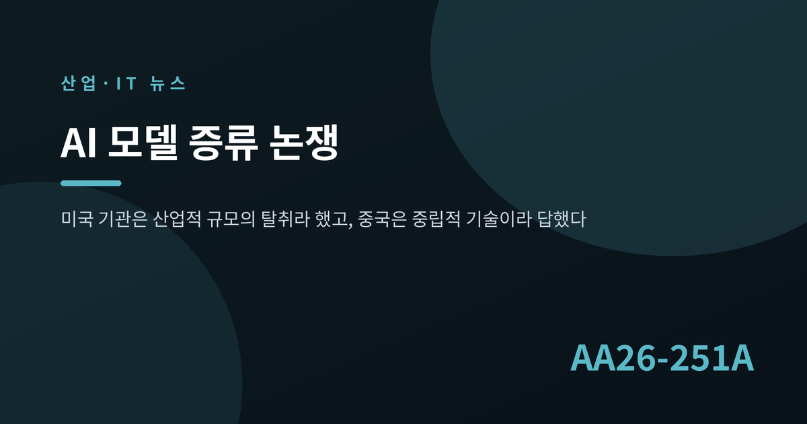
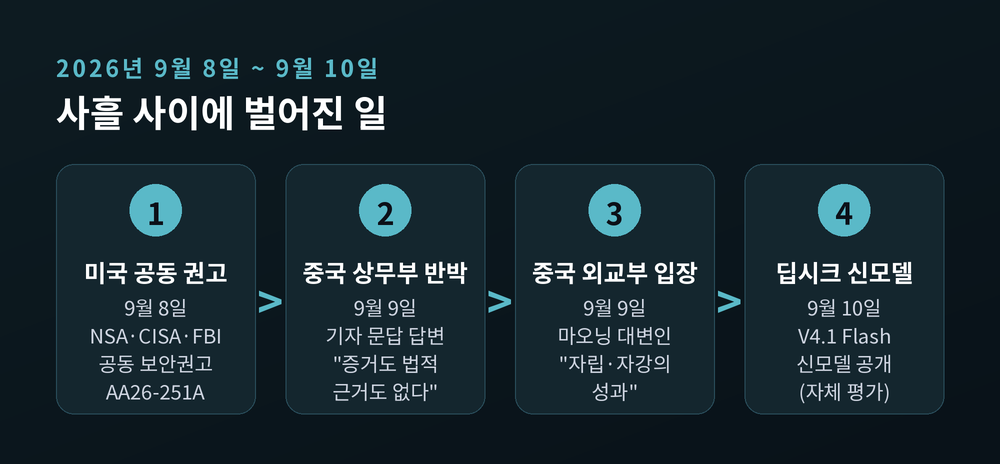
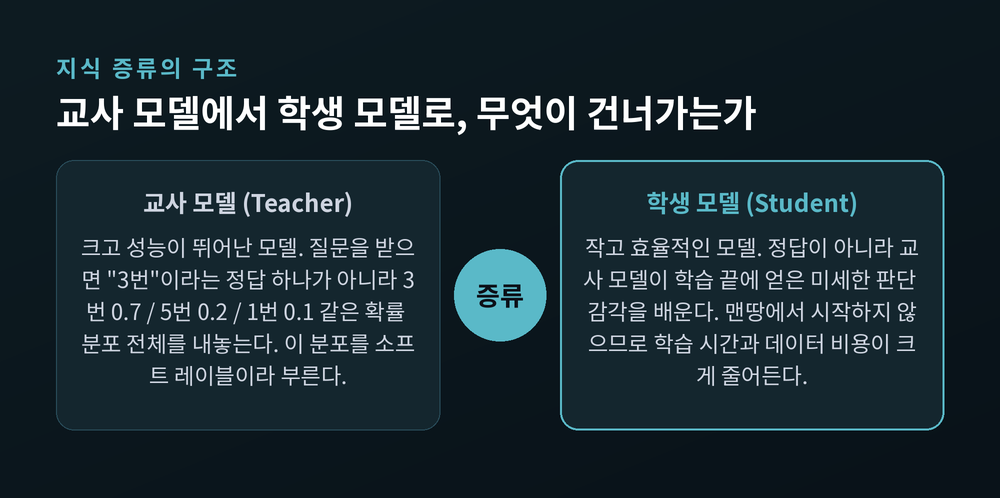
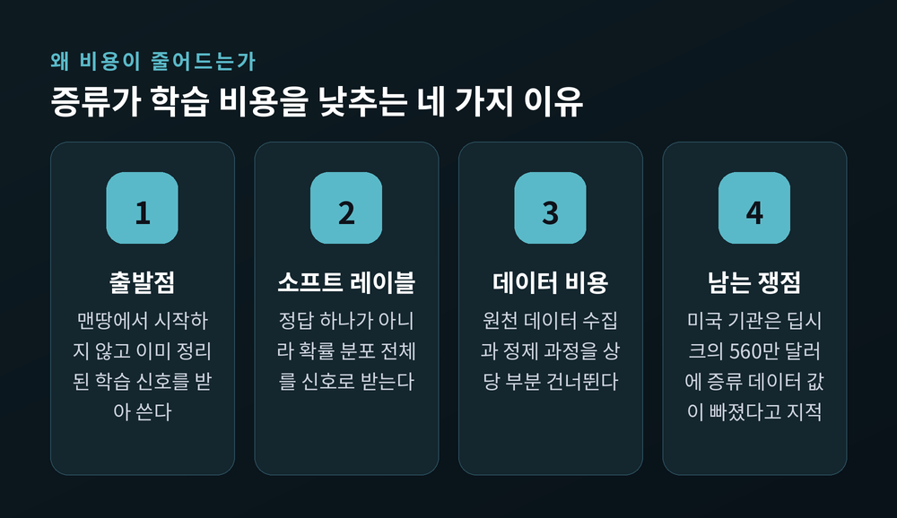
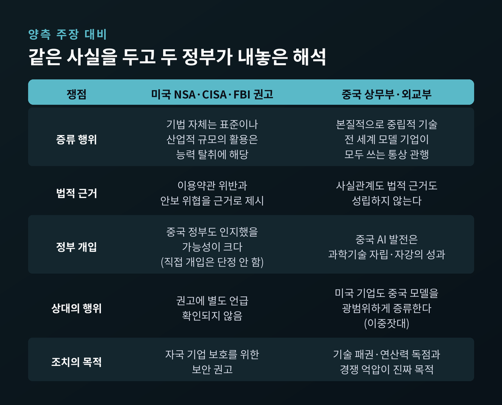
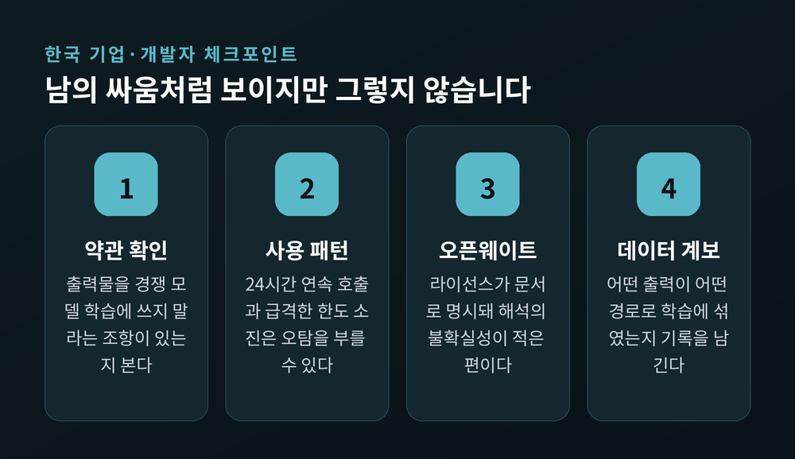

AI 모델 증류 논쟁, 미국이 중국 기업 6곳을 지목한 이유

이번 글에서는 지난 9월 8일 미국 세 개 기관이 내놓은 사이버보안 권고와, 그 다음 날 중국이 내놓은 반박을 정리해 보겠습니다.
쟁점의 이름은 '증류'입니다. 낯선 단어지만 알고 나면 지금 벌어지는 일의 구조가 꽤 선명해집니다.
9월 8일, 세 기관이 함께 이름을 올렸습니다
미국 국가안보국(NSA), 사이버보안·인프라보안국(CISA), 연방수사국(FBI)이 공동 사이버보안 권고를 발표했습니다. 문서 번호는 AA26-251A입니다.
제목부터 직설적입니다. "미국 AI 기업을 겨냥한 중국 소재 AI 기업의 산업적 규모 증류 캠페인"입니다.
권고의 요지는 이렇습니다. 중국 AI 기업들이 미국의 최상위 모델에 대량으로 질의를 던져 그 답변을 긁어모았고, 그것으로 자사 모델을 학습시켰다는 주장입니다.
하루 뒤인 9월 9일, 중국 상무부가 기자 문답 형식으로 반박했습니다. 같은 날 외교부도 입장을 냈습니다. 그리고 9월 10일, 딥시크는 신형 모델을 공개했습니다.
사흘 사이에 벌어진 일입니다.

지목된 곳은 여섯 곳입니다
권고가 이름을 올린 기업은 딥시크, 문샷 AI, 알리바바 그룹, 미니맥스, 스텝펀, Z.AI입니다. 여섯 곳입니다.
표적이 됐다고 기관들이 지목한 미국 모델은 앤트로픽의 클로드, 오픈AI의 GPT, 구글의 제미나이, xAI의 그록 계열입니다.
규모에 관한 주장도 구체적입니다. 최소 2024년 말부터 수백만 건의 요청을 통해 수십억 개 토큰 규모의 데이터를 빼냈다는 것입니다.
기업별 서술도 따로 붙었습니다. 권고에 따르면 딥시크는 추론과 글쓰기, 에이전트 기능, 법률 같은 특수 업무 능력을 R1과 V3 학습에 반영했습니다. 문샷 AI는 2025년 중반부터 소프트웨어 엔지니어링과 수학 능력을 키미(Kimi) 모델에 옮겼다고 서술됐습니다. Z.AI는 2026년 중반까지 GPT-5.5와 클로드 오퍼스 4.8에서 수십억 토큰을 증류해 사고사슬 추론을 개발했다는 주장입니다.
수법으로는 '트랜스퍼 스테이션'이라 불리는 회색시장 API 프록시가 거론됐습니다. 지역 제한을 우회하고 출신 국가를 가리는 통로라는 설명입니다. 프리미엄 계정을 여러 개 묶어 요청을 분산하는 방식도 함께 지적됐습니다.
다만 한 가지는 짚어야 합니다. 기관들은 중국 정부가 "인지하고 있었을 가능성이 크다"고만 평가했습니다. 정부의 직접 개입을 단정한 것이 아닙니다. 국내 보도 중에도 이 대목을 명시적으로 구분해 전한 곳이 있습니다.
증류가 대체 무엇이길래
여기서 한 번 멈춰 가겠습니다. 이 글에서 가장 중요한 부분입니다.
지식 증류(knowledge distillation)는 크고 성능 좋은 모델의 지식을 작고 효율적인 모델로 옮기는 기법입니다. 앞의 것을 교사 모델(teacher), 뒤의 것을 학생 모델(student)이라 부릅니다.
비유를 들어 보겠습니다.
수학 문제집이 두 권 있다고 해 보십시오. 한 권에는 정답만 적혀 있습니다. "3번." 다른 한 권에는 최상위권 선배가 풀이 과정과 함께 이렇게 적어뒀습니다. "3번이 가장 유력하고, 5번도 헷갈릴 만하며, 1번은 함정이다."
두 권으로 공부한 학생의 실력이 같을 리 없습니다.
증류가 하는 일이 바로 이 두 번째 문제집을 만드는 일입니다. 교사 모델은 "정답은 3번"이라고만 말하지 않습니다. "3번일 확률 0.7, 5번일 확률 0.2, 1번일 확률 0.1"이라는 확률 분포 전체를 내놓습니다. 이걸 소프트 레이블(soft label)이라 부릅니다.
그 분포 안에는 교사 모델이 오랜 학습 끝에 얻은 미세한 판단 감각이 압축돼 있습니다. 학생 모델은 정답이 아니라 그 감각을 배웁니다.

왜 비용이 그렇게 줄어드는가
핵심은 맨땅에서 시작하지 않는다는 점입니다.
모델을 밑바닥부터 학습시키려면 방대한 데이터를 모으고, 정제하고, 막대한 연산을 돌려야 합니다. 비용의 대부분이 여기서 발생합니다.
증류는 그 과정을 건너뜁니다. 이미 누군가 정리해둔 고품질 학습 신호를 받아 쓰기 때문입니다. 학습 시간도, 데이터 확보 비용도 크게 줄어듭니다.
그래서 이 기법은 원래 좋은 기술로 취급받아 왔습니다. 작은 기기에서 모델을 돌리거나, 자원이 부족한 팀이 쓸 만한 모델을 만들 때 정석에 가까운 방법입니다. 지금도 그렇습니다.
권고는 딥시크가 밝힌 560만 달러라는 학습 비용 수치에도 이의를 제기했습니다. 증류로 확보한 데이터의 실제 값이 그 숫자에 빠져 있다는 지적입니다. 참고로 이 560만 달러는 V3 모델의 단일 학습 런 비용이며, 딥시크 스스로도 전체 연구개발비는 아니라고 밝혀둔 수치입니다.

중국 상무부의 반박은 네 갈래였습니다
9월 9일 중국 상무부 대변인의 답변은 크게 네 갈래로 읽힙니다.
첫째, 증거도 법적 근거도 없다는 것입니다. 미국이 업계의 정상적인 기술·상업 문제를 정치화하고 수단으로 삼고 있다는 주장입니다.
둘째, 증류는 중립적 기술이라는 것입니다. 상무부는 증류를 두고 "모델끼리 서로 학습하는 통용되는 방법"이라 규정했습니다. 미국 기업을 포함해 전 세계 모델 기업이 모두 쓰는 기법이라는 논리입니다.
셋째, 이중잣대라는 것입니다. 중국은 오픈소스로 모델을 개방해왔고 미국 기업들도 중국 모델을 광범위하게 증류해왔는데, 같은 행위를 중국 기업이 하면 공격으로 규정한다는 주장입니다.
넷째, 진짜 목적은 산업 독점이라는 것입니다. 안보 기관을 앞세워 개별 기업의 이익을 국가 안보에 묶고, 국가 권력으로 정상적인 사업 활동에 간섭한다는 비판입니다. 일부 미국 AI 기업이 이용약관에 넣은 광범위한 지리적 제한을 두고는 불공정 조항이라 표현했습니다.
상무부는 경고와 대화 제안을 함께 내놨습니다. 증류 단속을 명분으로 중국 기업을 억압하면 단호히 반격하겠다고 하면서도, 양국 정상이 합의한 AI 정부 간 대화에는 응할 의향이 있다고 밝혔습니다.
중국 외교부 마오닝 대변인도 같은 날 "중국 AI 발전은 과학기술 자립·자강의 성과"라고 말했습니다.

저작권으로는 잡기 어렵다는 역설
이 사안에서 가장 흥미로운 지점은 법 쪽에 있습니다.
상식적으로는 "남의 모델을 베꼈으면 저작권 침해 아닌가" 싶습니다. 그런데 법률가들의 분석은 대체로 그 반대입니다.
AI가 만들어낸 출력물은 인간의 창작적 기여가 충분하지 않아 저작권 보호 대상이 되기 어렵다는 견해가 유력합니다. 게다가 오픈AI 이용약관은 출력물의 권리를 사용자에게 넘기도록 돼 있습니다. 데이터 추출을 입증하더라도, 그 데이터의 저작권을 주장하기는 쉽지 않다는 뜻입니다.
그럼 무엇이 남을까요. 계약입니다.
오픈AI 약관에는 출력물을 "우리 제품·서비스와 경쟁하는 AI 모델 개발에" 쓰지 말라는 조항이 있습니다. 이걸 어기면 계약 위반이 성립할 가능성이 높다는 것이 다수 분석의 견해입니다. 2025년 1월 오픈AI가 딥시크를 두고 약관 위반을 언급한 것도 같은 맥락입니다.
영업비밀 침해를 주장하는 길도 있습니다. 다만 중국 기업을 상대로 한 관할권 문제가 현실의 벽으로 남습니다. 2026년 9월 현재까지 실제 소송이 제기됐다는 사실은 확인되지 않았습니다.
모델 가중치가 법적으로 무엇인지조차 아직 정리되지 않았습니다. 저작물인지, 영업비밀인지, 데이터베이스인지 나라마다 답이 다릅니다. 기술은 이미 저만치 갔는데 법은 아직 출발선 근처에 있는 셈입니다.
수출통제와 만나는 지점
예전의 미중 기술 갈등은 반도체 한 품목에 집중됐습니다. 지금은 모델 접근권 자체가 통제 대상으로 올라왔습니다.
앤트로픽이 미국 정부의 수출통제 지침에 따라 최신 모델에 대한 외국 국적자 접근을 차단한 사례가 그 신호입니다. 국내 기관과 기업의 활용 계획에도 제동이 걸렸다고 전해집니다.
이번 권고가 제시한 방어책도 같은 결을 갖습니다. 계정 신원 확인 강화, 의심 계정 탐지, 지역별 접근 제한. 법률도 관세도 아니지만 실질적으로는 통제로 작동합니다. 중국 상무부가 이용약관의 지리적 제한을 걸고넘어진 이유이기도 합니다.
한편 중국은 대외적으로 오픈소스를 내세우면서도 내부적으로는 인력과 데이터의 해외 유출을 통제하고 있다는 분석이 나옵니다. 양쪽 모두 자기 자산은 안으로 묶는 방향입니다.
한국 기업과 개발자에게 남는 숙제
남의 싸움처럼 보이지만 그렇지 않습니다.
첫째, 이용약관을 읽어야 합니다. 저작권보다 계약이 실질적인 규제로 작동합니다. 해외 모델 API를 쓰신다면 "출력물을 경쟁 모델 학습에 쓰지 말 것" 조항이 있는지 확인하시길 권합니다.
둘째, 오탐 위험을 염두에 둬야 합니다. 권고가 제시한 탐지 지표는 24시간 쉼 없는 사용, 신규 구독의 즉각적 한도 소진, 계정 간 동기화된 행동 같은 것들입니다. 평가 자동화나 배치 처리를 돌리는 국내 팀도 비슷한 패턴을 만들 수 있습니다.
셋째, 응답이 조용히 낮아질 수 있다는 점입니다. 권고는 의심 계정을 알리지 않고 성능이 낮은 모델로 우회시키거나 응답을 변조하는 방안까지 담았습니다. 사용자가 알아채기 어려운 형태의 조치입니다.
넷째, 오픈웨이트 모델은 상대적으로 안전한 선택지입니다. 라이선스가 문서로 명시돼 있어 해석의 불확실성이 적은 편입니다. 다만 상업적 이용과 파생모델 조건은 라이선스마다 다르니 개별 확인이 필요합니다.
다섯째, 데이터 계보를 기록해두는 일입니다. 어떤 모델의 출력이 어떤 경로로 학습 데이터에 섞였는지 추적할 수 있어야 합니다. 나중에 "우리는 이렇게 만들었다"고 보여줄 수 있는 쪽이 강합니다.

앞으로 어떻게 흘러갈까
한 가지는 분명합니다. 이 논쟁은 기술 논쟁이 아니라 규칙 논쟁입니다.
증류가 불법이냐 아니냐를 묻는 게 아닙니다. 증류는 표준 기법입니다. 실제 질문은 다릅니다. 어느 규모까지가 학습이고 어디부터가 탈취인가, 그 선을 누가 그을 권한을 갖는가. 지금 양국이 다투는 것은 이 선을 긋는 권한입니다.
논쟁이 오가는 사이에도 중국 기업들은 움직였습니다. 딥시크는 9월 10일 'DeepSeek-V4.1 Flash'를 내놨습니다. 5,520억 개 파라미터 MoE 구조에 입력 시 80억, 출력 시 160억 파라미터만 활성화하는 비대칭 설계를 적용했다고 합니다. 다만 성능과 비용에서 앞선다는 평가는 회사 자체 발표입니다. 외부 검증은 아직입니다.
전문가들은 앞으로의 경쟁이 모델 성능 우위를 넘어 비용 효율성과 산업 적용 범위로 옮겨갈 것으로 봅니다.
다만 분명히 해둘 것이 있습니다. 이 사안에서 누가 옳은지는 지금 판단할 수 없습니다. 미국 기관이 제시한 증거의 구체적 수준은 공개 범위에서 확인되지 않았습니다. 중국 상무부가 말한 "미국 기업의 중국 모델 증류"도 구체적 사례가 함께 제시되지 않았습니다. 지목된 여섯 기업 각각의 공식 입장도 나오지 않았습니다.
양쪽 다 아직은 주장의 단계입니다.
정리하면 이렇습니다.
증류는 오래된 기술이고, 여전히 유용한 기술입니다. 달라진 것은 기술이 아니라 그 기술이 놓인 자리입니다. 실험실에 있을 때는 효율화 기법이었고, 국경을 건너는 순간 안보 사안이 됐습니다.
"기술은 중립적이어도, 기술이 놓인 자리는 중립적이지 않습니다."
이 논쟁이 언제 끝나겠냐고 물으신다면, 모델을 학습시키는 데이터의 출처를 서로 증명할 방법이 생기기 전에는 끝나지 않을 것이라 답하겠습니다.